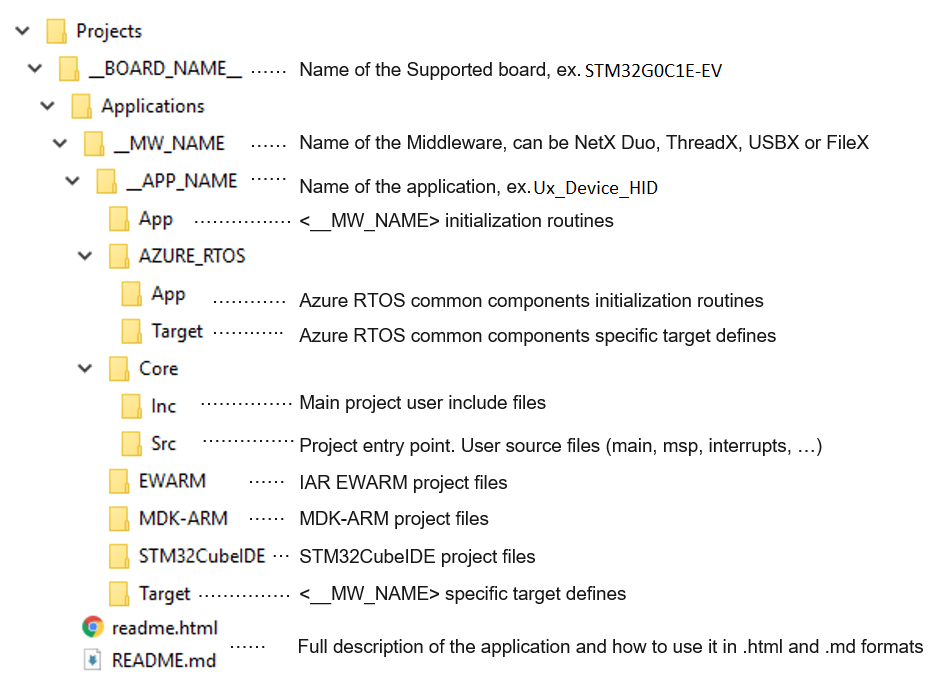

Release Notes for X-CUBE-AZRTOS-G0
Copyright © 2021 STMicroelectronics
Purpose
With Azure RTOS complementing the extensive STM32Cube ecosystem providing free development tools, software bricks, and software expansion packages, STM32 users can also leverage the rich services of Azure RTOS, which meet the needs of tiny, smart, connected devices.
X-CUBE-AZRTOS-G0 (Azure RTOS Software Expansion for STM32Cube) provides a full integration of Microsoft Azure RTOS in the STM32Cube environment for the STM32G0 series of microcontrollers. Ready-to-run applicative examples are also provided for the NUCLEO-G0B1RE and STM32G0C1E-EV evaluation boards, thus reducing the learning curve and ensuring a smooth application development experience with Azure RTOS and STM32G0 MCUs.
The scope of this package covers the following Azure RTOS middleware: RTOS (ThreadX), USB Device and Host (USBX), File System including NOR/NAND memories support (FileX and LevelX) and Networking (NetXDuo).

Azure RTOS is a professional grade, highly reliable and market proven Middleware suite:
- Integrated and full featured RTOS. Learn more ThreadX.
- Industrial grade networking stack: optimized for performance coming with many IoT protocols. Learn more Netx Duo
- Advanced FS/FTL: fully featured to support NAND/NOR Flash memories. Learn more FileX and LevelX
- USB Host and Device stacks coming with multiple classes. Learn more USBX
- Safety pre-certifications (from Microsoft): IEC 61508 SIL4, IEC 62304 Class C and ISO 26262 ASIL D
- Security pre-certifications (from Microsoft): EAL4+ for TLS/DTLS, FIPS 140-2 for SW crypto lib
- STM32 granted production license: here
Repository structure
The STMicroelectronics X-CUBE-AZRTOS-G0 repository consists of the following repositories:
- STM32CubeMX: contains STM32CubeMX configuration
files:
- xml files: they describe how the software component configuration parameters can be modified through the STM32CubeMX user interface
- flt files: they provide the initialization code to be generated by the STM32CubeMX
- Drivers: contains STM32G0 CMSIS, HAL and BSP drivers
- Middlewares: contains ThreadX, NetX Duo, FileX, LevelX and USBX stacks including porting on STM32 hardware
- Projects: provides ready-to-run applicative examples for Azure RTOS on the supported boards. Projects are structured as follows:

Documentation
More comprehensive documentation is available on STM32 MCU Wiki.
Update history
Main changes
- Maintenance release of X-CUBE-ARROS-G0 package
- Azure RTOS update to V6.1.10
- Add STM32 USB Power Delivery Devices Library .
- Add STM32 USB Power Delivery Core Library.
- Utilities
- Add STM32 TRACER_EMB.
- Add GUI_INTERFACE.
- Projects
- Add two new USBPD (Full PD)applications on STM32G0C1E-EV board.
- Update all USBX Applications to support USBPD (No PD) on STM32G0C1E-EV board.
- All Azure RTOS applications files regenerated using STM32CubeMX V6.6.0 and new Azure RTOS pack v1.1.0
Contents
Applications
Provides ready-to-run applicative examples for Azure RTOS on the supported boards. For detailed list refer to applications list
Drivers
| Name | Version | Release note |
|---|---|---|
| Cortex-M CMSIS | v5.6.0_cm0 | release notes |
| STM32G0xx CMSIS | v1.4.2 | release notes |
| STM32G0xx HAL | v1.4.5 | release notes |
| BSP STM32G0xx_Nucleo | v1.1.1 | release notes |
| BSP STM32G0xx_Nucleo_32 | v1.0.2 | release notes |
| BSP STM32G0C1E-EV | v1.0.2 | release notes |
| BSP STM32G081B_EVAL | v1.3.1 | release notes |
| BSP STM32G071B-Discovery | v1.2.1 | release notes |
| BSP STM32G0316-DISCO | v1.0.2 | release notes |
| BSP Common | v5.1.2 | release notes |
| BSP hx8347d | v1.1.2 | release notes |
| BSP stlm75 | v2.0.2 | release notes |
| BSP st7735 | v1.1.5 | release notes |
| BSP tusb546 | v1.0.3 | release notes |
| BSP cbtl08gp053 | v1.0.1 | release notes |
| BSP sn65dp141 | v1.0.2 | release notes |
| BSP ina230 | v1.0.0 | release notes |
| BSP ssd1315 | v1.1.0 | release notes |
Middlewares
| Name | Version | Release note |
|---|---|---|
| ThreadX | 6.1.10 | release notes |
| NetXDuo | 6.1.10 | release notes |
| USBX | 6.1.10 | release notes |
| FileX | 6.1.10 | release notes |
| LevelX | 6.1.10 | release notes |
| STM32_USBPD_Library - Core | v4.1.0 | release notes |
| STM32_USBPD_Library - Devices | v3.4.1 | release notes |
Utilities
| Name | Version | Release notes |
|---|---|---|
| GUI_INTERFACE | V2.2.1 | release notes |
| TRACER_EMB | V1.7.1 | release notes |
CMSIS-RTOS wrapper for Azure RTOS ThreadX
| Name | Version | Release note |
|---|---|---|
| cmsis_rtos_threadx | 1.0.4 | release notes |
| CMSIS-RTOS API group | Supported | Short Description |
|---|---|---|
| Kernel Information and Control | Y | It provides version/system information and starts/controls the RTOS Kernel. More… |
| Thread Management | Y | It defines, create, and control thread functions.. More… |
| Thread Flags | N | It synchronizes threads using flags. More… |
| Event Flags | Y | It synchronizes threads using flags. More… |
| Generic Wait Functions | Y | It waits for a certain period of time.. More… |
| Timer Management | Y | It creates and controls timer and timer callback functions. More… |
| Mutex Management | Y | It synchronizes resource access using Mutual Exclusion (Mutex). More… |
| Semaphores | Y | It access shared resources simultaneously from different threads. More… |
| Memory Pool | N | It manages thread-safe fixed-size blocks of dynamic memory. More… |
| Message Queue | Y | It exchanges messages between threads in a FIFO-like operation. More… |
The CMSIS-RTOS provides generic RTOS interfaces for Arm® Cortex® processor-based devices. It provides a standardized API for software components that require RTOS functionality.
For more information about CMSIS-RTOS API V2, please refer to the ARM manual: CMSIS-RTOS API
For more information about CMSIS-RTOS wrapper for Azure RTOS ThreadX, please refer to readme
Known limitations
- STM32CubeMX configuration files (PDSC/IPmode/IPconfig)
Some component inter-dependencies are missing and they will be added in future release
Some configuration parameters inter-dependencies are missing and they will be added in future release
Some configuration parameters minimum/maximum values are to be updated in the future release
- USBX composite device descriptors
A list of USB device Applications supporting auto generation of USB Device framework descriptors provided for these USB class drivers :MSC, HID mouse, CDC ACM, CDC ECM, DFU.
For the other device class drivers, user needs first to disable the device framework builder (refer to : USBX wiki section 2.2 How to customize) and provide the full set of required device descriptors.
- When using the Pack in STM32CubeMX
- FileX/LevelX: multi instance is not supported, a low level interface driver can be instanced only once
- USB Host Vbus is not managed by the Pack, user needs to configure the Vbus GPIO using STM32CubeMX “Pinout & Configuration” panel
- USB multi instance is not supported, a class driver can be instanced only once
- The component “USBX/CoreSystem” must be selected alongside either “USBX/UX Host CoreStack” or “USBX/UX Device CoreStack”
- The FileX standalone mode is not yet supported
- The USBX standalone mode is not yet supported
- The new Azure RTOS config flags and USBX device class(Printer,MTP,CCID ) brought by Azure RTOS 6.1.10 not yet supported and they will be added in future release.
- X-CUBE-AZRTOS-G0 is not compatible with the MDK-ARM AC5 compiler: when generating a project for the MDK-ARM toolchain, the AC6 compiler is used by default
- When implementing USBPD application, it is mendatory to ad the ADC & DMA request associated to ADC interrupts IRQHandlers in the interrupts file (stm32g0xx_i.c/.h).
Development toolchains and compilers
- IAR Embedded Workbench for ARM (EWARM)toolchain 8.50.9 + ST-LINKV3.
- STM32CubeIDE V1.9.0 + ST-LINKV3
- RealView Microcontroller Development Kit (MDK-ARM) toolchain V5.34 + ST-LINKV3
Supported devices and boards by Applications
- NUCLEO-G0B1RE (MB1360-C02)
- STM32G0C1E-EV (MB1312-A01)
Dependencies
This software release is compatible with:
- STM32CubeMX V6.6.0
- STM32PackCreator 3.4.0
Main changes
- First official release of STM32Cube Azure RTOS software expansion for STM32G0 MCU series.
Contents
Applications
Provides ready-to-run applicative examples for Azure RTOS on the supported boards. For detailed list refer to applications list
Drivers
| Name | Version | Release note |
|---|---|---|
| Cortex-M CMSIS | v5.6.0_cm0 | release notes |
| STM32G0xx CMSIS | v1.4.1 | release notes |
| STM32G0xx HAL | v1.4.3 | release notes |
| BSP STM32G0xx_Nucleo | v1.1.1 | release notes |
| BSP STM32G0xx_Nucleo_32 | v1.0.2 | release notes |
| BSP STM32G0C1E-EV | v1.0.1 | release notes |
| BSP STM32G081B_EVAL | v1.3.1 | release notes |
| BSP STM32G071B-Discovery | v1.2.1 | release notes |
| BSP STM32G0316-DISCO | v1.0.2 | release notes |
| BSP Common | v5.1.2 | release notes |
| BSP hx8347d | v1.1.2 | release notes |
| BSP stlm75 | v2.0.2 | release notes |
| BSP st7735 | v1.1.5 | release notes |
| BSP tusb546 | v1.0.3 | release notes |
| BSP cbtl08gp053 | v1.0.1 | release notes |
| BSP sn65dp141 | v1.0.2 | release notes |
| BSP ina230 | v1.0.0 | release notes |
| BSP ssd1315 | v1.1.0 | release notes |
| # Middlewares |
| Name | Version | Release note |
|---|---|---|
| ThreadX | 6.1.9 | release notes |
| NetXDuo | 6.1.9 | release notes |
| USBX | 6.1.9 | release notes |
| FileX | 6.1.8 | release notes |
| LevelX | 6.1.9 | release notes |
CMSIS-RTOS wrapper for Azure RTOS ThreadX
| Name | Version | Release note |
|---|---|---|
| cmsis_rtos_threadx | 1.0.4 | release notes |
| CMSIS-RTOS API group | Supported | Short Description |
|---|---|---|
| Kernel Information and Control | Y | It provides version/system information and starts/controls the RTOS Kernel. More… |
| Thread Management | Y | It defines, create, and control thread functions.. More… |
| Thread Flags | N | It synchronizes threads using flags. More… |
| Event Flags | Y | It synchronizes threads using flags. More… |
| Generic Wait Functions | Y | It waits for a certain period of time.. More… |
| Timer Management | Y | It creates and controls timer and timer callback functions. More… |
| Mutex Management | Y | It synchronizes resource access using Mutual Exclusion (Mutex). More… |
| Semaphores | Y | It access shared resources simultaneously from different threads. More… |
| Memory Pool | N | It manages thread-safe fixed-size blocks of dynamic memory. More… |
| Message Queue | Y | It exchanges messages between threads in a FIFO-like operation. More… |
The CMSIS-RTOS provides generic RTOS interfaces for Arm® Cortex® processor-based devices. It provides a standardized API for software components that require RTOS functionality.
For more information about CMSIS-RTOS API V2, please refer to the ARM manual: CMSIS-RTOS API
For more information about CMSIS-RTOS wrapper for Azure RTOS ThreadX, please refer to readme
Known limitations
- STM32CubeMX configuration files (PDSC/IPmode/IPconfig)
- Some component inter-dependencies are missing and they will be added in future release
- Some configuration parameters inter-dependencies are missing and they will be added in future release
- Some configuration parameters minimum/maximum values are to be updated in the future release
- USBX composite device descriptors
- A list of USB device Applications supporting auto generation of USB Device framework descriptors provided for these USB class drivers :MSC, HID mouse, CDC ACM, CDC ECM, DFU. For the other device class drivers, user needs first to disable the device framework builder (refer to : USBX wiki section 2.2 How to customize) and provide the full set of required device descriptors.
- When using the Pack in STM32CubeMX
- FileX/LevelX: multi instance is not supported, a low level interface driver can be instanced only once
- USB Host Vbus is not managed by the Pack, user needs to configure the Vbus GPIO using STM32CubeMX “Pinout & Configuration” panel
- USB multi instance is not supported, a class driver can be instanced only once
- The component “USBX/CoreSystem” must be selected alongside either “USBX/UX Host CoreStack” or “USBX/UX Device CoreStack”
- The FileX standalone mode is not yet supported
- User needs to point to the HAL Drivers under X-CUBE-AZRTOS-G0 install path instead of the default location when creating a USBX Host project
- X-CUBE-AZRTOS-G0 is not compatible with the MDK-ARM AC5 compiler: when generating a project for the MDK-ARM toolchain, the AC6 compiler is used by default ## Development toolchains and compilers
- IAR Embedded Workbench for ARM (EWARM)toolchain 8.50.6 + ST-LINKV3.
- STM32CubeIDE V1.7.0 + ST-LINKV3
- RealView Microcontroller Development Kit (MDK-ARM) toolchain V5.32 + ST-LINKV3
Supported devices and boards by Applications
- NUCLEO-G0B1RE (MB1360-C02)
- STM32G0C1E-EV (MB1312-A01)
Dependencies
This software release is compatible with:
- STM32CubeMX V6.4.0
- STM32PackCreator 3.3.0